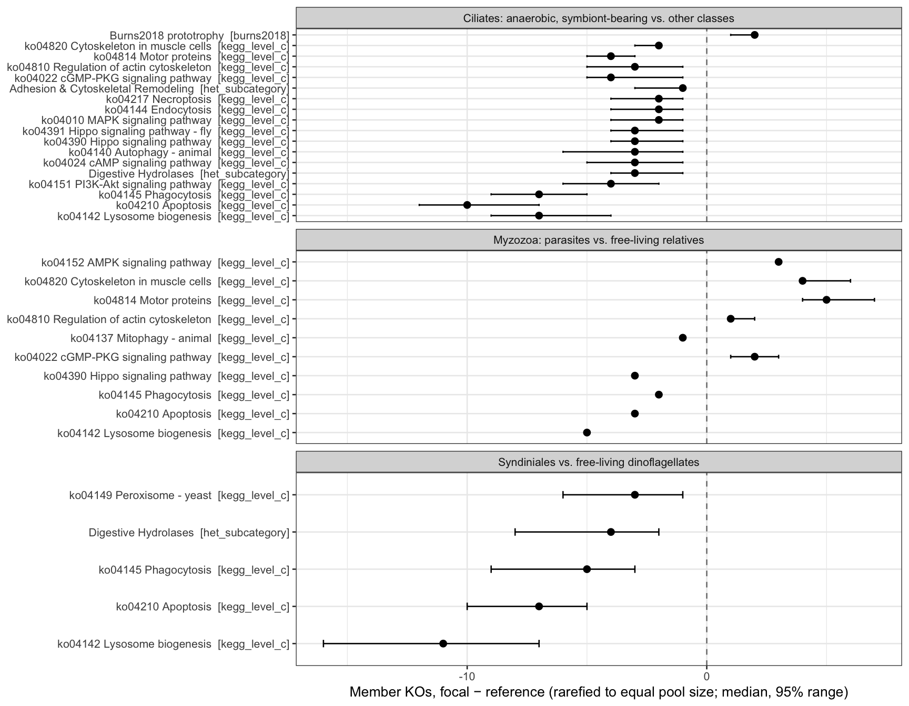

Code
source(if (file.exists("_setup.R")) "_setup.R" else "scripts/_setup.R")Frenemies euk metaT — curated grain 4; reads 05b output tables only
Hu Lab
October 23, 2026
SKH: assistant-added (2026-10-22). Reads only output tables and gene lists, so it renders in seconds and does not need
load_long_annot().
data/gene-lists/protist_phagotrophy_experimental.csv) are detected in this dataset, among which lineages, and are they in the vent-associated universe that 07 ranks?Gene sets come from data/gene-lists/trophic_gene_sets.csv (scripts/00b_build_trophic_gene_sets.R): KEGG level-C pathways in Transport and catabolism, Signal transduction, Cell growth and death and Cell motility (prokaryote-only maps dropped); the Burns et al. 2018 phagocytosis / photosynthesis / prototrophy families; and the protist experimental set. The curated heterotrophy subcategories (het_gene_reference.csv) are added so they can be read against the same contrasts.
Rules. Same carrier rule as 05b/06: a lineage × KO pair is detected when it clears the shared detection rule in ≥ pair_min_units (2) units of either habitat (05b_carrier_pairs.csv.gz). Presence/absence for detection; summed scaledTPM only as the weight in the depth-matched rarefaction below.
PAIR_MIN_UNITS <- params$pair_min_units # 2, as in 05b / 06
N_RAREFY <- 999 # rarefaction draws per contrast
MIN_SET_IN_POOL <- 3 # a set needs >= 3 member KOs across the two pools
PAIRS_TABLE <- "output-tables/05b_carrier_pairs.csv.gz"
SPAN_TABLE <- "output-tables/06_ko_span.csv" # vent-associated universe (07 ranks these)
SETS_TABLE <- "data/gene-lists/trophic_gene_sets.csv" # from 00b
HET_TABLE <- "data/gene-lists/het_gene_reference.csv" # from 00
EXPERIMENTAL <- "data/gene-lists/protist_phagotrophy_experimental.csv"pairs <- read_csv(PAIRS_TABLE, show_col_types = FALSE) |>
mutate(phylum = str_squish(str_extract(cur_phylum, "[^;]+$")),
lineage = str_squish(str_extract(cur_L4, "[^;]+$")),
tpm_total = tpm_vent + tpm_nonvent) |>
filter(n_det_vent >= PAIR_MIN_UNITS | n_det_nonvent >= PAIR_MIN_UNITS)
ko_span <- read_csv(SPAN_TABLE, show_col_types = FALSE)
trophic_sets <- read_csv(SETS_TABLE, show_col_types = FALSE)
het_ref <- read_csv(HET_TABLE, show_col_types = FALSE)
experimental <- read_csv(EXPERIMENTAL, show_col_types = FALSE)
message(glue("{nrow(pairs)} detected lineage x KO pairs | {n_distinct(pairs$cur_L4)} lineages | ",
"{n_distinct(pairs$ko_id)} KOs"))10783 detected lineage x KO pairs | 186 lineages | 3642 KOsOne row per gene × KO. n_lineages counts class-level lineages with a detected pair; top_lineages lists up to five, highest summed scaledTPM first. in_vent_universe is whether 07 ranks the KO at all; span_rank and top_carrier come from 06.
SKH:
ko_names <- trophic_sets |> distinct(ko_id, ko_name)
experimental_detection <- experimental |>
separate_longer_delim(ko_id, ";") |>
mutate(ko_id = na_if(str_squish(ko_id), "")) |>
left_join(ko_names, by = "ko_id") |>
left_join(pairs |>
summarise(n_lineages = n_distinct(cur_L4),
top_lineages = paste(head(lineage[order(-tpm_total)], 5), collapse = " | "),
.by = ko_id),
by = "ko_id") |>
left_join(ko_span |> select(ko_id, span_rank, top_carrier), by = "ko_id") |>
mutate(n_lineages = replace_na(n_lineages, 0L),
in_vent_universe = ko_id %in% ko_span$ko_id) |>
select(gene_label, organism, ko_id, ko_name, n_lineages, top_lineages,
in_vent_universe, span_rank, top_carrier, evidence, citation)
experimental_detectionFor results: how many experimental KOs are detected, how many enter the vent-associated universe, and which lineages carry them (
06b_experimental_ko_detection.csv).
Fixed before looking at the data, from the literature; edit lineage_groups to change membership. Each contrast compares lineages with a documented lifestyle (focal) against free-living relatives in the same phylum (reference). Lineages not listed (e.g. “(unres.)” bins, Mesodinium) stay out of both sides.
SKH:
ciliate_reference <- c("Colpodea", "Heterotrichea", "Litostomatea", "Nassophorea",
"Oligohymenophorea", "Phyllopharyngea", "Prostomatea", "Spirotrichea")
myzozoa_parasite <- c("Aconoidasia", "Apicomplexa (unres.)", "Ancora", "Cardiosporidium",
"Cephaloidophora", "Digyalum", "Eleutheroschizon", "Filipodium",
"Hammondia", "Lankesteria", "Platyproteum", "Polyplicarium",
"Rhytidocystis", "Selenidium", "Siedleckia", "Squirmida (unres.)",
"Perkinsea (unres.)", "Perkinsida")
myzozoa_freeliving <- c("Alphamonadaceae", "Chromeraceae", "Chromerida_X", "Colpodellaceae",
"Colpodellida (unres.)", "Colponema", "Colponemidia (unres.)",
"Vitrellaceae")
lineage_groups <- bind_rows(
tibble(contrast = "Ciliates: anaerobic, symbiont-bearing vs. other classes",
phylum = "Alveolata-Ciliophora", role = "focal",
lineage = c("Armophorea", "Muranotrichea", "Parablepharismea", "Plagiopylea")),
tibble(contrast = "Ciliates: anaerobic, symbiont-bearing vs. other classes",
phylum = "Alveolata-Ciliophora", role = "reference", lineage = ciliate_reference),
# Syndiniales: every lineage of the curated Syndiniales phylum, plus Amoebophryaceae
# wherever the curation placed it
pairs |> filter(phylum == "Alveolata-Syndiniales") |> distinct(phylum, lineage) |>
mutate(contrast = "Syndiniales vs. free-living dinoflagellates", role = "focal"),
tibble(contrast = "Syndiniales vs. free-living dinoflagellates",
phylum = "Alveolata-Dinophyta", role = "focal", lineage = "Amoebophryaceae"),
tibble(contrast = "Syndiniales vs. free-living dinoflagellates",
phylum = "Alveolata-Dinophyta", role = "reference",
lineage = c("Dinophyceae", "Noctilucales", "Oxyrrhinales")),
tibble(contrast = "Myzozoa: parasites vs. free-living relatives",
phylum = "Alveolata-Myzozoa", role = "focal", lineage = myzozoa_parasite),
tibble(contrast = "Myzozoa: parasites vs. free-living relatives",
phylum = "Alveolata-Myzozoa", role = "reference", lineage = myzozoa_freeliving))
stopifnot(!anyDuplicated(lineage_groups[c("contrast", "phylum", "lineage")]))
grouped_pairs <- pairs |>
inner_join(lineage_groups, by = c("phylum", "lineage"), relationship = "many-to-many")
# KO pool per side: union of member lineages, weight = summed scaledTPM
pools <- grouped_pairs |>
summarise(weight = pmax(sum(tpm_total), 1e-9), # a detected pair always counts
n_lineages = n_distinct(cur_L4), .by = c(contrast, role, ko_id))
pool_sizes <- pools |>
summarise(n_kos = n_distinct(ko_id), .by = c(contrast, role)) |>
left_join(grouped_pairs |> summarise(lineages = paste(sort(unique(lineage)), collapse = ", "),
.by = c(contrast, role)),
by = c("contrast", "role"))
pool_sizesListed lineages that are absent from pool_sizes had no detected pair.
SKH:
het_sets <- het_ref |>
filter(!is.na(subcategory)) |>
distinct(set_name = subcategory, ko_id) |>
mutate(set_source = "het_subcategory")
contrast_sets <- trophic_sets |>
distinct(set_source, set_name, ko_id) |>
bind_rows(het_sets) |>
distinct(set_source, set_name, ko_id)
contrast_sets |> summarise(n_sets = n_distinct(set_name), .by = set_source)A lineage pool with few detected KOs holds mostly its most highly expressed ones, so a raw “share of the repertoire in set X” mixes biology with sequencing depth. Here both pools are rarefied to the same number of KOs (the smaller pool’s size), drawing KOs without replacement with probability proportional to their summed scaledTPM, which mimics detection at a lower depth. For each set and draw: diff = members in focal − members in reference. Reported per set: median diff, its 2.5–97.5% range over N_RAREFY draws, and frac_focal_higher. This is a rarefaction summary, not a hypothesis test: an interval that excludes 0 means the difference holds at matched depth, nothing more, and with pools of tens of KOs it should be read as exploratory.
SKH:
rarefied_contrast <- function(pool_focal, pool_ref, sets, n_draws = N_RAREFY) {
n_draw <- min(nrow(pool_focal), nrow(pool_ref))
set_ids <- sets |>
filter(ko_id %in% c(pool_focal$ko_id, pool_ref$ko_id)) |>
add_count(set_source, set_name, name = "n_in_pools") |>
filter(n_in_pools >= MIN_SET_IN_POOL)
if (!nrow(set_ids) || n_draw < 2) return(tibble())
# KO x set incidence, so one draw is a single colSums()
set_keys <- set_ids |> distinct(set_source, set_name) |>
mutate(key = paste(set_source, set_name, sep = " :: "))
all_kos <- union(pool_focal$ko_id, pool_ref$ko_id)
incidence <- matrix(0L, length(all_kos), nrow(set_keys),
dimnames = list(all_kos, set_keys$key))
incidence[cbind(set_ids$ko_id, paste(set_ids$set_source, set_ids$set_name, sep = " :: "))] <- 1L
draw_counts <- function(pool) {
replicate(n_draws, colSums(incidence[sample(pool$ko_id, n_draw, prob = pool$weight), ,
drop = FALSE]))
}
diffs <- matrix(draw_counts(pool_focal) - draw_counts(pool_ref), nrow = nrow(set_keys))
# member KO ids on each side, so overlap between KEGG maps is visible
# (the same cathepsin or V-ATPase can sit in Lysosome, Phagocytosis and Apoptosis)
members_in <- function(pool) {
map_chr(set_keys$key, \(k) paste(sort(intersect(pool$ko_id, all_kos[incidence[, k] == 1L])),
collapse = " | "))
}
set_keys |>
mutate(n_rarefied = n_draw,
in_focal_pool = colSums(incidence[pool_focal$ko_id, , drop = FALSE]),
in_ref_pool = colSums(incidence[pool_ref$ko_id, , drop = FALSE]),
focal_member_kos = members_in(pool_focal),
ref_member_kos = members_in(pool_ref),
diff_median = apply(diffs, 1, median),
diff_lo = apply(diffs, 1, quantile, 0.025),
diff_hi = apply(diffs, 1, quantile, 0.975),
frac_focal_higher = rowMeans(diffs > 0),
frac_ref_higher = rowMeans(diffs < 0),
interval_excludes_0 = diff_lo > 0 | diff_hi < 0) |>
select(-key)
}
set.seed(params$seed)
contrast_results <- pools |>
nest(.by = contrast) |>
mutate(result = map(data, \(d) rarefied_contrast(
pool_focal = d |> filter(role == "focal"),
pool_ref = d |> filter(role == "reference"),
sets = contrast_sets))) |>
select(contrast, result) |>
unnest(result) |>
arrange(contrast, desc(interval_excludes_0), desc(abs(diff_median)))
message(glue("{nrow(contrast_results)} contrast x set rows | ",
"{sum(contrast_results$interval_excludes_0)} with a 95% rarefaction interval excluding 0"))146 contrast x set rows | 33 with a 95% rarefaction interval excluding 0For results: per contrast, the sets whose rarefaction interval excludes 0, with pool sizes from
06b_lineage_contrast_pools.csv. Small pools (tens of KOs) limit what any set can show.
contrast_results |>
filter(interval_excludes_0) |>
mutate(set_label = fct_reorder(paste0(set_name, " [", set_source, "]"), diff_median)) |>
ggplot(aes(x = diff_median, y = set_label)) +
geom_vline(xintercept = 0, linetype = 2, colour = "grey50") +
geom_errorbarh(aes(xmin = diff_lo, xmax = diff_hi), height = 0.2) +
geom_point(size = 2) +
facet_wrap(~contrast, ncol = 1, scales = "free_y") +
labs(x = "Member KOs, focal − reference (rarefied to equal pool size; median, 95% range)",
y = NULL) +
theme_bw(base_size = 10)Warning: `geom_errorbarh()` was deprecated in ggplot2 4.0.0.
ℹ Please use the `orientation` argument of `geom_errorbar()` instead.`height` was translated to `width`.
stopifnot(
!anyDuplicated(experimental_detection[c("gene_label", "ko_id")]),
all(pool_sizes$n_kos > 0),
all(contrast_results$diff_lo <= contrast_results$diff_median),
all(contrast_results$diff_median <= contrast_results$diff_hi),
all(contrast_results$frac_focal_higher + contrast_results$frac_ref_higher <= 1 + 1e-9)
)R version 4.6.0 (2026-04-24)
Platform: aarch64-apple-darwin23
Running under: macOS Sequoia 15.8.1
Matrix products: default
BLAS: /Library/Frameworks/R.framework/Versions/4.6/Resources/lib/libRblas.0.dylib
LAPACK: /Library/Frameworks/R.framework/Versions/4.6/Resources/lib/libRlapack.dylib; LAPACK version 3.12.1
locale:
[1] en_US.UTF-8/en_US.UTF-8/en_US.UTF-8/C/en_US.UTF-8/en_US.UTF-8
time zone: America/Chicago
tzcode source: internal
attached base packages:
[1] stats graphics grDevices utils datasets methods base
other attached packages:
[1] patchwork_1.3.2 glue_1.8.1 vegan_2.7-6 permute_0.9-10
[5] lubridate_1.9.5 forcats_1.0.1 stringr_1.6.0 dplyr_1.2.1
[9] purrr_1.2.2 readr_2.2.0 tidyr_1.3.2 tibble_3.3.1
[13] ggplot2_4.0.3 tidyverse_2.0.0
loaded via a namespace (and not attached):
[1] generics_0.1.4 stringi_1.8.9 lattice_0.23-1 hms_1.1.4
[5] digest_0.6.39 magrittr_2.0.5 evaluate_1.0.5 grid_4.6.0
[9] timechange_0.4.0 RColorBrewer_1.1-3 fastmap_1.2.0 jsonlite_2.0.0
[13] Matrix_1.7-6 mgcv_1.9-4 scales_1.4.0 cli_3.6.6
[17] crayon_1.5.3 rlang_1.3.0 bit64_4.8.6 splines_4.6.0
[21] withr_3.0.3 yaml_2.3.12 otel_0.2.0 tools_4.6.0
[25] parallel_4.6.0 tzdb_0.5.0 vctrs_0.7.3 R6_2.6.1
[29] lifecycle_1.0.5 bit_4.6.0 htmlwidgets_1.6.4 vroom_1.7.1
[33] MASS_7.3-66 cluster_2.1.8.3 pkgconfig_2.0.3 pillar_1.11.1
[37] gtable_0.3.6 xfun_0.60 tidyselect_1.2.1 rstudioapi_0.19.0
[41] knitr_1.51 farver_2.1.2 htmltools_0.5.9 nlme_3.1-171
[45] labeling_0.4.3 rmarkdown_2.32 compiler_4.6.0 S7_0.2.2 ---
title: "06b — Trophic signatures in protist lineages"
subtitle: "Frenemies euk metaT — curated grain 4; reads 05b output tables only"
author: "Hu Lab"
date: last-modified
format:
html:
toc: true
toc-depth: 2
code-fold: show
df-print: paged
---
>SKH: assistant-added (2026-10-22). Reads only output tables and gene lists, so it renders
in seconds and does not need `load_long_annot()`.
# Questions
* **A. Experimental phagotrophy genes.** Which KOs whose loss impairs phagotrophy *in a
protist* (knockout, knockdown or silencing; `data/gene-lists/protist_phagotrophy_experimental.csv`)
are detected in this dataset, among which lineages, and are they in the vent-associated
universe that 07 ranks?
* **B. Lineage contrasts.** Do lineages with a documented symbiotic or parasitic lifestyle
express a different share of each gene set than their free-living relatives?
**Gene sets** come from `data/gene-lists/trophic_gene_sets.csv`
(`scripts/00b_build_trophic_gene_sets.R`): KEGG level-C pathways in Transport and catabolism,
Signal transduction, Cell growth and death and Cell motility (prokaryote-only maps dropped);
the Burns et al. 2018 phagocytosis / photosynthesis / prototrophy families; and the protist
experimental set. The curated heterotrophy subcategories (`het_gene_reference.csv`) are
added so they can be read against the same contrasts.
**Rules.** Same carrier rule as 05b/06: a lineage × KO pair is *detected* when it clears the
shared detection rule in ≥ `pair_min_units` (2) units of either habitat
(`05b_carrier_pairs.csv.gz`). Presence/absence for detection; summed scaledTPM only as the
weight in the depth-matched rarefaction below.
# Set up
```{r setup}
#| message: false
#| warning: false
source(if (file.exists("_setup.R")) "_setup.R" else "scripts/_setup.R")
```
```{r}
PAIR_MIN_UNITS <- params$pair_min_units # 2, as in 05b / 06
N_RAREFY <- 999 # rarefaction draws per contrast
MIN_SET_IN_POOL <- 3 # a set needs >= 3 member KOs across the two pools
PAIRS_TABLE <- "output-tables/05b_carrier_pairs.csv.gz"
SPAN_TABLE <- "output-tables/06_ko_span.csv" # vent-associated universe (07 ranks these)
SETS_TABLE <- "data/gene-lists/trophic_gene_sets.csv" # from 00b
HET_TABLE <- "data/gene-lists/het_gene_reference.csv" # from 00
EXPERIMENTAL <- "data/gene-lists/protist_phagotrophy_experimental.csv"
```
```{r read-inputs}
pairs <- read_csv(PAIRS_TABLE, show_col_types = FALSE) |>
mutate(phylum = str_squish(str_extract(cur_phylum, "[^;]+$")),
lineage = str_squish(str_extract(cur_L4, "[^;]+$")),
tpm_total = tpm_vent + tpm_nonvent) |>
filter(n_det_vent >= PAIR_MIN_UNITS | n_det_nonvent >= PAIR_MIN_UNITS)
ko_span <- read_csv(SPAN_TABLE, show_col_types = FALSE)
trophic_sets <- read_csv(SETS_TABLE, show_col_types = FALSE)
het_ref <- read_csv(HET_TABLE, show_col_types = FALSE)
experimental <- read_csv(EXPERIMENTAL, show_col_types = FALSE)
message(glue("{nrow(pairs)} detected lineage x KO pairs | {n_distinct(pairs$cur_L4)} lineages | ",
"{n_distinct(pairs$ko_id)} KOs"))
```
# A. Experimental phagotrophy genes
One row per gene × KO. `n_lineages` counts class-level lineages with a detected pair;
`top_lineages` lists up to five, highest summed scaledTPM first. `in_vent_universe` is
whether 07 ranks the KO at all; `span_rank` and `top_carrier` come from 06.
>SKH:
```{r experimental-detection}
ko_names <- trophic_sets |> distinct(ko_id, ko_name)
experimental_detection <- experimental |>
separate_longer_delim(ko_id, ";") |>
mutate(ko_id = na_if(str_squish(ko_id), "")) |>
left_join(ko_names, by = "ko_id") |>
left_join(pairs |>
summarise(n_lineages = n_distinct(cur_L4),
top_lineages = paste(head(lineage[order(-tpm_total)], 5), collapse = " | "),
.by = ko_id),
by = "ko_id") |>
left_join(ko_span |> select(ko_id, span_rank, top_carrier), by = "ko_id") |>
mutate(n_lineages = replace_na(n_lineages, 0L),
in_vent_universe = ko_id %in% ko_span$ko_id) |>
select(gene_label, organism, ko_id, ko_name, n_lineages, top_lineages,
in_vent_universe, span_rank, top_carrier, evidence, citation)
experimental_detection
write_csv(experimental_detection, "output-tables/06b_experimental_ko_detection.csv")
```
> For results: how many experimental KOs are detected, how many enter the vent-associated
> universe, and which lineages carry them (`06b_experimental_ko_detection.csv`).
# B. Lineage contrasts
## Lineage groups
Fixed before looking at the data, from the literature; edit `lineage_groups` to change
membership. Each contrast compares lineages with a documented lifestyle (`focal`) against
free-living relatives in the same phylum (`reference`). Lineages not listed (e.g.
"(unres.)" bins, *Mesodinium*) stay out of both sides.
* **Ciliates.** Armophorea, Muranotrichea and Parablepharismea form a clade of obligate
anaerobes that all host prokaryotic symbionts (Rotterová et al. 2020, *Curr Biol*
30:2037–2050); Plagiopylea are anaerobic ciliates with prokaryotic symbionts (Fenchel et
al. 1977, *J Protozool* 24:154–163), including a denitrifying endosymbiont (Graf et al.
2021, *Nature* 591:445–450).
* **Syndiniales.** Parasitoids of other protists (John et al. 2019, *Sci Adv* 5:eaav1110;
Farhat et al. 2018, *Front Microbiol* 9:2251), against free-living dinoflagellate
lineages. Dinophyceae includes mixotrophs and a few parasites, so the reference is not
purely free-living.
* **Myzozoa.** Apicomplexans, gregarines, squirmids and perkinsids (parasites) against
chromerids and colpodellids (free-living photosynthetic or predatory relatives;
Woo et al. 2015, *eLife* 4:e06974; Mathur et al. 2019, *Curr Biol* 29:2936–2941; Leander
et al. 2003, *J Eukaryot Microbiol* 50:334–340; Hoppenrath and Leander 2009,
*J Eukaryot Microbiol* 56:251–256).
>SKH:
```{r lineage-groups}
ciliate_reference <- c("Colpodea", "Heterotrichea", "Litostomatea", "Nassophorea",
"Oligohymenophorea", "Phyllopharyngea", "Prostomatea", "Spirotrichea")
myzozoa_parasite <- c("Aconoidasia", "Apicomplexa (unres.)", "Ancora", "Cardiosporidium",
"Cephaloidophora", "Digyalum", "Eleutheroschizon", "Filipodium",
"Hammondia", "Lankesteria", "Platyproteum", "Polyplicarium",
"Rhytidocystis", "Selenidium", "Siedleckia", "Squirmida (unres.)",
"Perkinsea (unres.)", "Perkinsida")
myzozoa_freeliving <- c("Alphamonadaceae", "Chromeraceae", "Chromerida_X", "Colpodellaceae",
"Colpodellida (unres.)", "Colponema", "Colponemidia (unres.)",
"Vitrellaceae")
lineage_groups <- bind_rows(
tibble(contrast = "Ciliates: anaerobic, symbiont-bearing vs. other classes",
phylum = "Alveolata-Ciliophora", role = "focal",
lineage = c("Armophorea", "Muranotrichea", "Parablepharismea", "Plagiopylea")),
tibble(contrast = "Ciliates: anaerobic, symbiont-bearing vs. other classes",
phylum = "Alveolata-Ciliophora", role = "reference", lineage = ciliate_reference),
# Syndiniales: every lineage of the curated Syndiniales phylum, plus Amoebophryaceae
# wherever the curation placed it
pairs |> filter(phylum == "Alveolata-Syndiniales") |> distinct(phylum, lineage) |>
mutate(contrast = "Syndiniales vs. free-living dinoflagellates", role = "focal"),
tibble(contrast = "Syndiniales vs. free-living dinoflagellates",
phylum = "Alveolata-Dinophyta", role = "focal", lineage = "Amoebophryaceae"),
tibble(contrast = "Syndiniales vs. free-living dinoflagellates",
phylum = "Alveolata-Dinophyta", role = "reference",
lineage = c("Dinophyceae", "Noctilucales", "Oxyrrhinales")),
tibble(contrast = "Myzozoa: parasites vs. free-living relatives",
phylum = "Alveolata-Myzozoa", role = "focal", lineage = myzozoa_parasite),
tibble(contrast = "Myzozoa: parasites vs. free-living relatives",
phylum = "Alveolata-Myzozoa", role = "reference", lineage = myzozoa_freeliving))
stopifnot(!anyDuplicated(lineage_groups[c("contrast", "phylum", "lineage")]))
grouped_pairs <- pairs |>
inner_join(lineage_groups, by = c("phylum", "lineage"), relationship = "many-to-many")
# KO pool per side: union of member lineages, weight = summed scaledTPM
pools <- grouped_pairs |>
summarise(weight = pmax(sum(tpm_total), 1e-9), # a detected pair always counts
n_lineages = n_distinct(cur_L4), .by = c(contrast, role, ko_id))
pool_sizes <- pools |>
summarise(n_kos = n_distinct(ko_id), .by = c(contrast, role)) |>
left_join(grouped_pairs |> summarise(lineages = paste(sort(unique(lineage)), collapse = ", "),
.by = c(contrast, role)),
by = c("contrast", "role"))
pool_sizes
```
Listed lineages that are absent from `pool_sizes` had no detected pair.
## Gene sets
>SKH:
```{r contrast-sets}
het_sets <- het_ref |>
filter(!is.na(subcategory)) |>
distinct(set_name = subcategory, ko_id) |>
mutate(set_source = "het_subcategory")
contrast_sets <- trophic_sets |>
distinct(set_source, set_name, ko_id) |>
bind_rows(het_sets) |>
distinct(set_source, set_name, ko_id)
contrast_sets |> summarise(n_sets = n_distinct(set_name), .by = set_source)
```
## Depth-matched comparison
A lineage pool with few detected KOs holds mostly its most highly expressed ones, so a raw
"share of the repertoire in set X" mixes biology with sequencing depth. Here both pools are
**rarefied to the same number of KOs** (the smaller pool's size), drawing KOs without
replacement with probability proportional to their summed scaledTPM, which mimics detection
at a lower depth. For each set and draw: `diff = members in focal − members in reference`.
Reported per set: median `diff`, its 2.5–97.5% range over `N_RAREFY` draws, and
`frac_focal_higher`. **This is a rarefaction summary, not a hypothesis test**: an interval
that excludes 0 means the difference holds at matched depth, nothing more, and with pools
of tens of KOs it should be read as exploratory.
>SKH:
```{r rarefied-contrast}
#| message: true
rarefied_contrast <- function(pool_focal, pool_ref, sets, n_draws = N_RAREFY) {
n_draw <- min(nrow(pool_focal), nrow(pool_ref))
set_ids <- sets |>
filter(ko_id %in% c(pool_focal$ko_id, pool_ref$ko_id)) |>
add_count(set_source, set_name, name = "n_in_pools") |>
filter(n_in_pools >= MIN_SET_IN_POOL)
if (!nrow(set_ids) || n_draw < 2) return(tibble())
# KO x set incidence, so one draw is a single colSums()
set_keys <- set_ids |> distinct(set_source, set_name) |>
mutate(key = paste(set_source, set_name, sep = " :: "))
all_kos <- union(pool_focal$ko_id, pool_ref$ko_id)
incidence <- matrix(0L, length(all_kos), nrow(set_keys),
dimnames = list(all_kos, set_keys$key))
incidence[cbind(set_ids$ko_id, paste(set_ids$set_source, set_ids$set_name, sep = " :: "))] <- 1L
draw_counts <- function(pool) {
replicate(n_draws, colSums(incidence[sample(pool$ko_id, n_draw, prob = pool$weight), ,
drop = FALSE]))
}
diffs <- matrix(draw_counts(pool_focal) - draw_counts(pool_ref), nrow = nrow(set_keys))
# member KO ids on each side, so overlap between KEGG maps is visible
# (the same cathepsin or V-ATPase can sit in Lysosome, Phagocytosis and Apoptosis)
members_in <- function(pool) {
map_chr(set_keys$key, \(k) paste(sort(intersect(pool$ko_id, all_kos[incidence[, k] == 1L])),
collapse = " | "))
}
set_keys |>
mutate(n_rarefied = n_draw,
in_focal_pool = colSums(incidence[pool_focal$ko_id, , drop = FALSE]),
in_ref_pool = colSums(incidence[pool_ref$ko_id, , drop = FALSE]),
focal_member_kos = members_in(pool_focal),
ref_member_kos = members_in(pool_ref),
diff_median = apply(diffs, 1, median),
diff_lo = apply(diffs, 1, quantile, 0.025),
diff_hi = apply(diffs, 1, quantile, 0.975),
frac_focal_higher = rowMeans(diffs > 0),
frac_ref_higher = rowMeans(diffs < 0),
interval_excludes_0 = diff_lo > 0 | diff_hi < 0) |>
select(-key)
}
set.seed(params$seed)
contrast_results <- pools |>
nest(.by = contrast) |>
mutate(result = map(data, \(d) rarefied_contrast(
pool_focal = d |> filter(role == "focal"),
pool_ref = d |> filter(role == "reference"),
sets = contrast_sets))) |>
select(contrast, result) |>
unnest(result) |>
arrange(contrast, desc(interval_excludes_0), desc(abs(diff_median)))
message(glue("{nrow(contrast_results)} contrast x set rows | ",
"{sum(contrast_results$interval_excludes_0)} with a 95% rarefaction interval excluding 0"))
contrast_results |> filter(interval_excludes_0)
write_csv(contrast_results, "output-tables/06b_lineage_contrast_sets.csv")
write_csv(pool_sizes, "output-tables/06b_lineage_contrast_pools.csv")
```
> For results: per contrast, the sets whose rarefaction interval excludes 0, with pool sizes
> from `06b_lineage_contrast_pools.csv`. Small pools (tens of KOs) limit what any set can show.
```{r fig-rarefied-contrast}
#| fig-width: 9
#| fig-height: 7
contrast_results |>
filter(interval_excludes_0) |>
mutate(set_label = fct_reorder(paste0(set_name, " [", set_source, "]"), diff_median)) |>
ggplot(aes(x = diff_median, y = set_label)) +
geom_vline(xintercept = 0, linetype = 2, colour = "grey50") +
geom_errorbarh(aes(xmin = diff_lo, xmax = diff_hi), height = 0.2) +
geom_point(size = 2) +
facet_wrap(~contrast, ncol = 1, scales = "free_y") +
labs(x = "Member KOs, focal − reference (rarefied to equal pool size; median, 95% range)",
y = NULL) +
theme_bw(base_size = 10)
```
# QC
```{r qc}
stopifnot(
!anyDuplicated(experimental_detection[c("gene_label", "ko_id")]),
all(pool_sizes$n_kos > 0),
all(contrast_results$diff_lo <= contrast_results$diff_median),
all(contrast_results$diff_median <= contrast_results$diff_hi),
all(contrast_results$frac_focal_higher + contrast_results$frac_ref_higher <= 1 + 1e-9)
)
```
# Session Info
```{r}
sessionInfo()
```